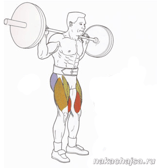

Помощь
Упражнения
Приседания со штангой на плечах:
Приседания со штангой на плечах относятся к главным базовым упражнениям, позволяющим быстро и с постоянной прогрессией набирать массу, увеличивать силовые показатели , некоторые девушки также используют приседания со штангой, которые позволяют выступать в роли корректора фигуры – это упражнения помогает сделать красивые бедра и ягодицы. Среди атлетов различных силовых видов спорта это упражнение получило свою известность благодаря тому, что оно включает в работу огромное количество мышц: мышцы бедер, мышцы ягодиц, мышцы пресса и поясницы. Но данное упражнение имеет свой недостаток, уменьшающий желание использовать это упражнение – огромная нагрузка на хребет (а точнее междисковое пространство), ведь штанга удерживается фактически на плечах. Поэтому, те, кто имеет проблемы с позвоночником типа защемлений или «вылетов» дисков, опасаются прибегать к поднятию веса на плечах. Чем заменить приседания со штангой на плечах. Ну, а для тех, кто имеет проблемы или какие-либо заболевания позвоночника, отличным решением будет замена подобных приседаний с весом на жим ногами в гакк-машине (гакк-тренажере). Положение тела в этом тренажере позволяет снять нагрузку с поясницы, но теперь и мышцы пресса недополучают нагрузку, которая, в свою очередь, ложится на ноги и ягодицы. Выгодно для больных, но для здоровых этот тренажер лучше использовать после приседаний со штангой, чтобы «забить» ноги или для начинающих, которые еще не научились правильно выполнять технику упражнения.
Приседания со штангой на плечах техника выполнения:
Исходное положение : Штанга стоит на стойках, необходимо подлезть под нее, удобно расположив на задних отделах дельт. Руки при этом находятся в хвате ширине плеч или чуть шире. Далее необходимо снять штангу со стоек и отойти на небольшое расстояние от них. Расположить ноги примерно на ширине плеч, носки должны смотреть вперед, параллельно друг другу, чтобы легче было держать равновесие, можно под пятки подложить маленькие блины от штанги (1-2 килограммовые). После чего начинаем приседать, делая движение вниз со штангой. Внимание спину в это время нужно держать ровно, ни в коем случае не прогибать в спине, из-за этого вы можете навредить своему позвоночнику! Присесть необходимо чуть ниже определенного уровня – параллели, не нужно делать слишком глубокие приседания, так как это делает очень сильную нагрузку на суставы колен. Из-за чего потом у вас появятся проблемы с суставами. Подъем со штангой нужно делать плавно без рывков, чтобы не защемить себе мышцу или нерв. После выполнения данного количества повторений со штангой на плечах подходите к стойкам и ставите аккуратно штангу на стойки. Во время выполнения упражнения голова должна смотреть вперед чуток вверх, не нужно смотреть вниз или вбок из-за этого можно получить травму или потерять равновесие и упасть со штангой. На самом деле приседание со штангой на плечах это очень серьезное и хорошее упражнения. Не правильно его выполняя можете навредить своему здоровью! Особенно великий риск получить травму спины (хребта). Делая правильно упражнения, выполняя правильную технику вы сводите риск практически к нулю. К тому же благодаря этому прекрасному упражнению у вас начнет вырабатываться больше тестостерона, вы будете качать большие группы мышц (ноги) и кроме этого лучше будут расти и остальные группы мышц. Запрещается также во время приседаний перемещать руки по штанге. Проще говоря – перехватываться. Удобным положением ладоней нужно заниматься до того, как штанга окажется на плечах. Перед тем, как поднимать большие веса, необходимо четко изучить технику выполнения!